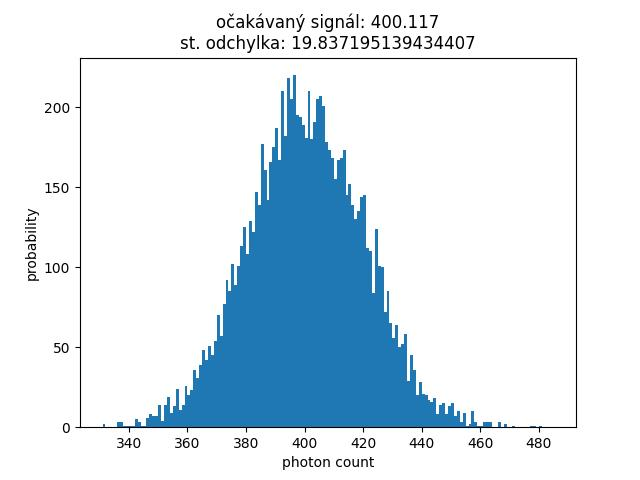

Blog
Na velikosti pixelu stále záleží
Trend zvyšovania rozlíšenia a zmenšovania pixelov si všímam, odkedy nejakým spôsobom vnímam digitálnu fotografiu. Osobne si myslím, že tento trend prináša viac škody než úžitku, avšak nie všetci fotografi by so mnou súhlasili. Toť nedávno som natrafil na článok, vyvracajúci mýtus (i keď podla mojej domnieky, ktorú sa v tomto blogu pokúsom obhájiť, sa nejedná o mýtus), že so zvyšovaním rozlíšenia senzoru a teda smenšovaním pixelov, na jednotlivé pixely dopadá menej svetla a tým sa znižuje kvalita obrazu. Argumenty v článku pre to, že sa jedná len o mýtus, sú založené na tom, že pri zmenšovaní velkosti pixelu síce dopadá menej fotónov na jednotlivý pixel, ale celkový počet fotónov dopadajúcich na snímač sa nemení a tudíž kvalita obrazu sa nielen že nemení, ale dokoca vďaka väčšiemu rozlíšeniu, zlepšuje.
" The argument is usually based around the idea that ‘larger pixels can gather more light’. This is true, if you consider a pixel in isolation. However, a sensor is an array of pixels, and a larger pixel occupies a larger proportion of that sensor. Apart from one factor, which will be discussed later, the size of the pixels does not affect how much light a sensor can collect. If you look at weather forecasts, the amount of rain is measured in millimetres. This is the depth of rainfall collected in the bottom of a straight-sided vessel left in the rain. The area of the vessel does not matter, since the depth will always be the same." Celý článok je na linku: Are smaller pixels worse? Sensor technology myths explained
Aj keď uvedené vety sú pravdivé, toto stanovisko ignoruje ďalší jav, prejavujúci sa hlavne za horších svetelných podmienok a tým je fotónový šum.
Fotónový šum vychádza so stochastickej povahy svetelného signálu a je to odchylka signálu, spôsobená fluktuáciou v počte dopadaných fotónov okolo očakávaného signálu (očakávaný signál je priemerná hodnota poissonového rozdelenia). To znamená že napríklad pri signále 100 fotónov nám za jednotkový expozičný čas dopadne na snímač raz 100 fotónov, potom 94, potom 102, atď. - rozdielne hodnoty sú dané poissonovým pravdepodobnostným rozdelením. Smerodatná odchylka signálu je v prípade poissonového rozdelenia odmocninou signálu. A vzhladom k tomu, že sa jedná o šum, vychádzajúci z prirodzenej povahy svetelného signálu, žiaden technologický pokrok pri výrobe čipu nám nepomôže a jediný spôsob, ako si sním zmysluplne poradiť, je nazbierať väčšie množstvo fotónov a tým si zlepšiť pomer signálu k jeho odchýlke (šumu). V prípade, identickej optickej sústavy, expozičného času a citlivosti snímača, jedinou premennou ktorá môže zvýšiť počet dopadajúcich fotónov, je práve velkosť pixelu.
Uvažujme 3 dokonalé snímače so 100 % kvantovou účinnosťou, produkúce nulový šum, hotpixelym či iné artefakty. Snímače majú rovnakú plochu, na ktorú dopadá svetlo s kontantným rozložením intenzity, ale snímače majú rozdielne rozlíšenie (velkosť pixelov): prvý má pixely velikosti 1 x 1 nm, druhý 2 x 2 nm a tretí 5 x 5 nm. V prípade fotónového toku 100 fotónov na 1 nm, bude charakteristika signálu a šumu pre tieto pixely tak ako je to na uvedených grafoch. Z grafov je zrejmé zlepšovanie pomeru signál/šum (tento pomer odpovedá smerodatnej odchýlke) so zväčšovaním pixelu. Kvalita fotografického výstupu nie je daná samotným osvetlením pixelu, ale práve pomerom signál/šum. Nie je to ale obecne platné pravidlo, pretože od určiteho pomeru je zlepšovanie výstupu zanedbatelné - nastavenie prahu pre zlepšovanie je už subjektívna záležitosť každého fotografa.

Poďme si ďalej skúsiť vygenerovať príklad (na konci blogu prikladám skript), ktorý bude počítať rovnakými pixelmi ako je to v prípade ukážky poissonového rozdelenia (štvorcové pixely so stranou 1 nm, 2 nm a 5 nm). Rozlíšenie pre snímače pri zachovaní celkovej plochy snímača je teda: 9 Mpx, 2.25 Mpx a 0.36 Mpx. S použitím skvelej knižnice numpy je možné preložiť pole v tvare rozlíšenia snímača (3000 x 3000 px) hocjakou matematickou funkciou (pre účely príkladu ide iba o to, aby sme dosiahli rozdiely v jase na snímači) a tým si vygenerovať obrázok, ktorý bude použitý pre porovnanie. V prípade, žeby svetlo bolo determistického charakteru a teda by nevznikal fotónový šum, by obrázok pre všetky tri snímače vyzeral takto:
Nevidíte medzi obrázkami rozdiely? Výborne! Celkový počet fotónov je nemenný a po vyrovnaní jasov (viz color bar vpravo) je naozaj jediný rozdiel v kvalite, ktorý na takto malom obrázku nie je vidieť, v rozlíšení a teda snímač s menšími pixelim by znamenal vyššiu obrazovú kvalitu, tak ako je to uvedené v pôvodnom článku. Realita je ale trošku iná:
Vzhladom k tomu, že svetelný signál (počet fotónov dopadajúcich na plochu) nikdy nie je konštantný, ale riadi sa poissonovým rozdelením, pri málo svetelných podmienkach je výsledný výstup silno ovplyvnený i počtom fotónov dopadajúcich na jeden pixel, nie len celkovým počtom fotónov dopadajúcich na plochu snímača. A teda väčšie pixely, pri nemenných ostatných parametroch systému, v prípade slabej expozície, vždycky budú produkovať z hladiska osvetlenia a šumu lepší výstup.
Rozdielna situácia bude v prípade silného svetelného signálu, kedy bude i pre malý pixel dosiahnutý dostatočný pomer signál/šum a zväčšovanie pixelu už neprinenie žiadnu výhodu, akurát sa vplyvom horšieho rozlíšenia zhorší celková kvalita výstupu. V tomto prípade by teda platily závery pôvodného článku. Napríklad pri 1000 násobne silnejšom signále by porovnanie bolo takéto:
Záverom, pri hodnotení vplyvu velkosti pixelu a rozlíšenia snímačov na kvalitu výstupu, nestačí brať v úvahu technologický pokrok, kedy sa kvantová účinnosť moderných snímačov blíži dokonalosti, ale stále musíme uvažovať konkrétne podmienky. A v horších svetelných podmienkach majú kamery s relatívne malým rozlíšením stále svoj význam.
Nutno uviesť, že i tento blog je pomerne zjednodušujúci a zanedbáva ďalšie efekty, ktoré je ďalej nutné hodnotit pri posudzovaní vplyvu rozlíšenia na kvalitu obrazu. A to je napríklad ďalšie zložky šumu (temný prúd, ktorý sa zväčšuje pri dĺžke expozície takže eliminácia fotónoveho šumu predlžovaním expozičného času môže byť problematická), vykreslenie optickej sústavy, ohnisko, iné než svetelné podmienky (napríklad nestabilita atmosféty - seeing),... Možno sa im povenujem v niektorom z ďalších blogov.
Dole je skript, použitý pre generovanie obrázkov a testovanie úvah. Jadrom skriptu je rutina numpy.random.poisson.
import matplotlib.pyplot as plt
import numpy as np
#------------------- poisson example-----------------
pixel_small = 10000 # mean photon count (expected signal)
def poisson_1d(pixel):
sample = np.random.poisson(pixel, 10000)
dev = np.std(sample)
print("st. odchylka of ", pixel/pixel_small, "nm pixel and ", pixel_small, "photons/1 nm flux: ", str(dev))
bin = np.arange(np.min(sample), np.max(sample), 1)
plt.hist(sample, bins=bin)
plt.xlabel("photon count")
plt.ylabel("probability")
plt.title("očakávaný signál: " + str(np.mean(sample)) + "\nst. odchylka: " + str(dev))
plt.show()
plt.savefig(str(pixel) + ".jpg")
plt.close()
poisson_1d(pixel_small)
poisson_1d(pixel_small * 4)
poisson_1d(pixel_small * 25)
#-----------------photon noise--------------------------
def generate_img(resolution):
x, y = np.meshgrid(np.linspace(0, 1, resolution), np.linspace(0, 1, resolution))
return ((0.5 + x + x**10 + y/4 + y**8) * np.exp(-x**1.8 - y**1.5) * 200).astype(int)
def resample(img, binning):
big = img.reshape(img.shape[0]//binning, binning, img.shape[1]//binning, binning)
return big.sum(axis=(1, 3))
def poisson(img):
return np.random.poisson(img, (img.shape[0], img.shape[1]))
def figure(fig, name):
plt.imshow(fig, cmap='gray')
plt.colorbar()
plt.title(name)
plt.savefig(name + ".jpg" , dpi=600)
plt.close()
# ------------------ Noiseless----------------
noiseless = generate_img(3000)
figure(noiseless, "noiseless")
print("\nFull resolution illumination: ", noiseless.sum())
noiseless_resampled_2 = resample(noiseless, 2)
figure(noiseless_resampled_2, "noiseless_resampled_2")
print("Resampled 2 illumination: ", noiseless_resampled_2.sum())
noiseless_resampled_5 = resample(noiseless, 5)
figure(noiseless_resampled_5, "noiseless_resampled_5")
print("Resampled 5 illumination: ", noiseless_resampled_5.sum())
#------------------ with noise---------------------------------
noise = poisson(noiseless)
figure(noise, "full_resolution")
noise_resampled_2 = poisson(noiseless_resampled_2)
figure(noise_resampled_2, "resampled_2")
noise_resampled_5 = poisson(noiseless_resampled_5)
figure(noise_resampled_5, "resampled_5")

 Citlivá CCD kamera s minimálnym temným prúdom takmer nevyžaduje kalibračné temné snímky. Vzhladom k obmedzeniam starších CCD snímačov (v porovnaní s dnešnými CMOS vyšší vyčítací šum, a podstatne dlhší vyčítací čas) je vhodná na dlhé expozície a presnou, alebo pointovanou montážou. Obvykle s touto kamerou fotím 10 minutové subexpozície, vďaka ktorým sa uvedené obmedzenia stávajú zanedbatelným.
Citlivá CCD kamera s minimálnym temným prúdom takmer nevyžaduje kalibračné temné snímky. Vzhladom k obmedzeniam starších CCD snímačov (v porovnaní s dnešnými CMOS vyšší vyčítací šum, a podstatne dlhší vyčítací čas) je vhodná na dlhé expozície a presnou, alebo pointovanou montážou. Obvykle s touto kamerou fotím 10 minutové subexpozície, vďaka ktorým sa uvedené obmedzenia stávajú zanedbatelným.